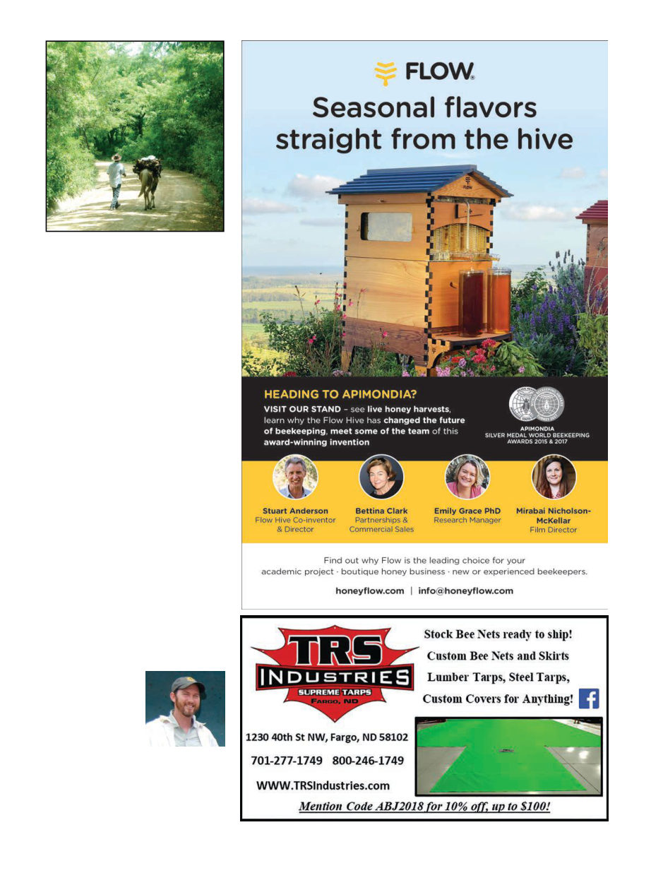

September 2019
1039
Kris
Fricke
is
the
“beekeeper-in-chief”
of Bee Aid Internation-
al,
www.beedev.org,
and also runs Great
Ocean
Road
Honey
Company in Victoria,
Australia.
He
would
also like to thank Vincent Cosgrove for pa-
tiently answering inane questions such
as what kind of car he was driving when
he thought up Sweet Progress, and rec-
ommends you check out https://sweet
progressvirtue.org/ which has a very good
introductory video.
Rural Nicaraguan traffic jam
bees wearing two layers of suits, but
it proved doable.
I made a presentation at the Fab-
retto headquarters. It was supposed
to be for the students but apparently
there was a miscommunication and
no students were informed. Instead
all of Fabretto’s teachers came. My
computer, which had worked an hour
earlier, of course chose the moment
we started to fail. Par for the course in
aid work. Presentation goes on with-
out PowerPoint. The fallback plan for
a fallback audience. This is aid work.
After two short weeks I was watch-
ing the ominous volcanic plumes
receding from the window of an air-
craft. Simmering instability looms
unmistakably over the landscape
and is written with bullet-holes in
the plaster walls, and yet there is
such hope and selflessness here too.
Despite the threat of eruptions of vio-
lence, people like Padre Fabretto and
Vincent Cosgrove, their organiza-
tions and volunteers, continue unde-
terred. Regimes come and go, man-
made plumes of smoke will again
reach up into the sky, but as long
as there is a need for education and
hope among the people, the organi-
zations and volunteers dedicated to
providing it will remain.